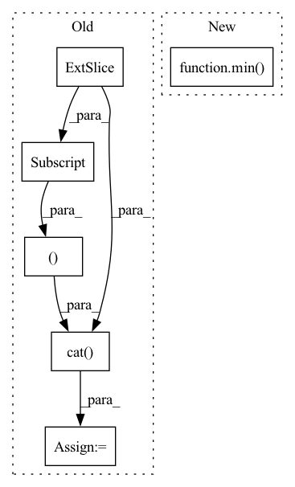

Pattern ID :15242
Before Change
if index == 0:
img = torch.cat( (
self.frames[0, :, :, :],
self.frames[0, :, :, :],
self.frames[1, :, :, :] ), dim=0)
elif index == (self.__len__() - 1):
img = torch.cat((After Change
img = torch.cat((
self.frames[max(0, index - 1), :, :, :],
self.frames[index, :, :, :],
self.frames[min( self.__len__() - 1, index + 1) , :, :, :]), dim=0)
else:
img = self.frames[index, :, :, :]
In pattern: SUPERPATTERN
Frequency: 3
Non-data size: 6
Instances Fragment ID: 51433264
Project Name: turagalab/decode
Commit Name: defa569ae04e129cadab2011848376f7682ccd48
Time: 2019-03-01
Author: gitdev@LRM.photo
File Name: deepsmlm/neuralfitter/dataset.py
M Class Name: UnsupervisedDataset
N Class Name: UnsupervisedDataset
M Method Name: __getitem__(2)
N Method Name: __getitem__(2)
M Parent Class: Dataset
N Parent Class: Dataset
M File Name: deepsmlm/neuralfitter/dataset.py
N File Name: deepsmlm/neuralfitter/dataset.py
M Start Line: 100
M End Line: 121
N Start Line: 143
N End Line: 152
Before Change
frame_ix.unsqueeze(1),
self.id[ix].unsqueeze(1)), dim=1)
else:
grand_matrix = torch.cat( (self.xyz[ix, :],
self.phot[ix].unsqueeze(1),
frame_ix.unsqueeze(1) ), dim=1)
grand_matrix_list = torch_cpp.split_tensor(grand_matrix, frame_ix, ix_f, ix_l)
em_list = []
After Change
The first frame is assumed to be 0. If it"s negative go to the lowest negative.
if frame_ix.numel() != 0:
ix_f = min( 0, frame_ix.min())
if self.num_emitter != 0:
grand_matrix_list = torch_cpp.split_tensor(grand_matrix, frame_ix, ix_f, ix_l)
Fragment ID: 51433268
Project Name: turagalab/decode
Commit Name: bddf5aec0672cd591e0c2673951126d3826781a5
Time: 2019-03-06
Author: gitdev@LRM.photo
File Name: deepsmlm/generic/emitter.py
M Class Name: EmitterSet
N Class Name: EmitterSet
M Method Name: split_in_frames(3)
N Method Name: split_in_frames(3)
M Parent Class:
N Parent Class:
M File Name: deepsmlm/generic/emitter.py
N File Name: deepsmlm/generic/emitter.py
M Start Line: 49
M End Line: 77
N Start Line: 74
N End Line: 108
Before Change
elif index == (self.__len__() - 1):
img = torch.cat( (
self.frames[-2, :, :, :],
self.frames[-1, :, :, :],
self.frames[-1, :, :, :] ), dim=0)
else:
img = torch.cat((After Change
img = torch.cat((
self.frames[max(0, index - 1), :, :, :],
self.frames[index, :, :, :],
self.frames[min( self.__len__() - 1, index + 1) , :, :, :]), dim=0)
Representation of the emitters on a grid, where each pixel / voxel is used for one emitter. Fragment ID: 51433269
Project Name: turagalab/decode
Commit Name: a562faf6bd644c73162bb580e70bb738e7a7a2e6
Time: 2019-02-20
Author: gitdev@LRM.photo
File Name: deepsmlm/neuralfitter/dataset.py
M Class Name: SMLMDataset
N Class Name: SMLMDataset
M Method Name: __getitem__(2)
N Method Name: __getitem__(2)
M Parent Class: Dataset
N Parent Class: Dataset
M File Name: deepsmlm/neuralfitter/dataset.py
N File Name: deepsmlm/neuralfitter/dataset.py
M Start Line: 57
M End Line: 78
N Start Line: 58
N End Line: 61